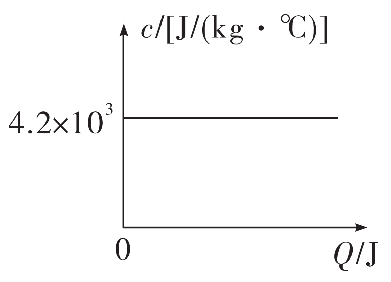
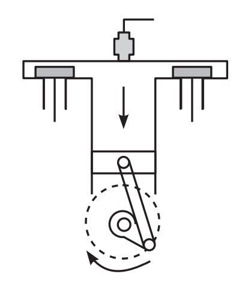
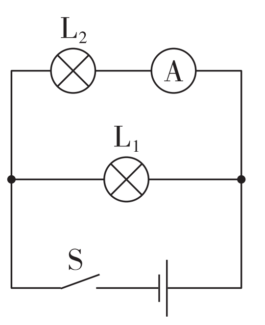
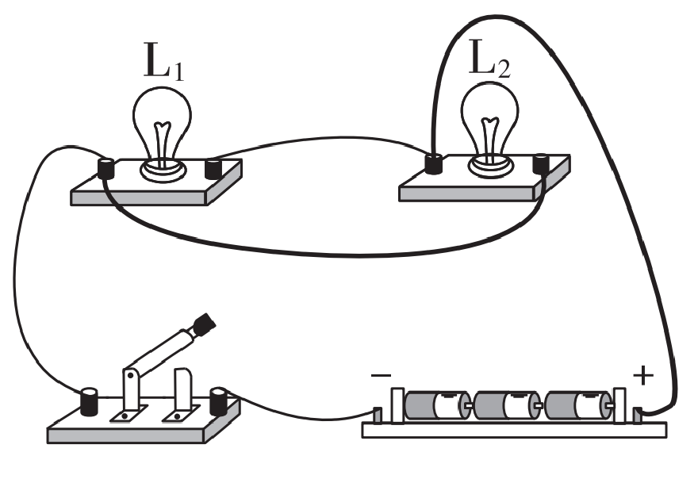

1.驰 ráo
2.① ②
3.B
4.B
5.(1)须晴日 看红装素裹 分外妖娆
(2)江山如此多娇 引无数英雄竞折腰
(3)俱往矣 数风流人物 还看今朝
1.穗
甸甸
zhā
2.A
3.D
4.D
1.B
2.B
3.1936年他出版的第一本诗集《大堰河》，表达了他热爱祖国的深挚感情。
4.C
1.D
2.A
3.B
4.C
1.娉 冕 ní
2.B
3.将“书写”改成“诉说”。
4.C
1.qī 勃
2.B
3.C
4.D
1.呢 涌 qī
2.① ①
3.D
4.B
5.(示例)假如我是一种颜色，我愿是那一抹金黄。 就像行道树旁的那一盏街灯，点亮漆黑的小巷，让黑夜不再漫长。
6.①直挂云帆济沧海
②欲为圣明除弊事
③病树前头万木春
④(示例)人有悲欢离合/晴空一鹤排云上
⑤(示例)月有阴晴圆缺/便引诗情到碧霄
7.C
8.D
9.(1)(示例)江南古镇，黄昏时分
(2)(示例)枯藤缠绕的老树特写，昏鸦飞过
(3)(示例)一位旅人伫立在夕阳下，低头吟诵“夕阳西下，断肠人在天涯”，画面定格，镜头拉长
(4)(示例)文中强调短视频可通过视听演绎让诗词再现鲜活意象。本设计选取古镇黄昏实景，用镜头捕捉枯藤老树昏鸦等曲中意象，画面由近及远、由景及人，让观众沉浸于天涯游子的孤寂愁思之中，真切体会诗词的意境之美
课前预习
1.chú hè láng yá míng liè gōng
2.蔚 潺潺 辄 伛 蔌 翳
3.丝，弦乐器；竹，管乐器 丝，蚕丝；竹，竹子
4.(1)名词活用作状语，沿着山路
(2)名词活用作状语，像鸟张开翅膀
(3)名词活用作状语，在前面
(4)形容词的意动用法，以……为快乐
5.(1)秀丽 茂盛
(2)居高面下 靠近，这里是在……旁边的意思
(3)取名，命名 名字
(4)命名 为，是
(5)意趣，情趣 意志
(6)领会 实现
(7)散开 指天气放晴
(8)聚拢 回去
6.(1)助词，的 代词，指亭子 结构助词，用于主谓之间，取消句子独立性，无实义
(2)在 对，对于
(3)连词，表递进 连词，表修饰 连词，表并列 连词，表承接 连词，表转折
课后提升
1.C
2.D
3.D
4.D
5.(1)宋 欧阳修 永叔 醉翁 六一居士
(2)觥筹交错 起坐而喧哗者
(3)山水之乐 得之心而寓之酒也
6.(1)A
(2)①苍老的容颜，花白的头发，醉倒在众人中间，这是太守喝醉了。
②人们知道跟随太守游玩而感到快乐，却不知道太守以游人的快乐为快乐。
(3)C
(4)(示例)我赞成闲适说。文章描写了滁州一带朝暮、四季自然景物不同的美、滁州百姓和平宁静的生活以及作者在山林中与民一齐游赏宴饮的乐趣，表现了作者随遇而安、与民同乐的旷达情怀，充满了士大夫悠闲自适的情调。
7.B
8.D
9.这样一个偏远的小县，尚且如此，整个国家的情况就可想而知了。
10.①严谨处理政务：遇事不敢忽，反复查阅旧案，避免出现冤假错案。②施政宽简不扰民：宽简而不扰，不为苛急、繁碎，使民便之。③慎用刑罚：继承其父的为政理念，常求其生，避免滥杀无辜。
11.①家风家教的影响：其父为官时谨慎办案、力求求生的仁政思想，以及母亲常求其生的家训，使他自幼形成恤民、仁爱的为政理念。②为政经历的触动：贬官夷陵时见冤案众多，深感天下固可知，从而树立遇事不敢忽的责任意识，主张宽简为民、惠及百姓。③社会制度的反思：在北宋榷酒制度等弊政下，官吏享乐而农民困苦，促使他通过诗文揭露时弊，呼吁关注民生。
课前预习
1.zhēn gēng ná cuì hàng dàng jiè
2.凇 毡
3.(1)我 剩下
(2)古人罚酒时用的酒杯 像霜或雪的颜色(跟黑相对)
4.名词活用作动词，客居
5.(1)全、皆 数目“一”
(2)古代夜间的计时单位 还
(3)这 表示肯定的判断
(4)消失 与外界隔绝
课后提升
1.D
2.C
3.B
4.B
5.(1)陶庵 《陶庵梦忆》
(2)湖上影子 惟长堤一痕 湖心亭一点 与余舟一芥 舟中人两三粒而已
(3)莫说相公痴 更有痴似相公者
6.(1)①裹、围。
②撑(船)。
③还。
④等到。
(2)①冰花周围弥漫着白汽，天与云与山与水，浑然一体，白茫茫一片。
②我尽力喝了三大杯酒，然后(和他们)道别。
(3)D
(4)(示例一)我支持小语的观点，张岱是惊喜的。张岱雪夜独往湖心亭赏雪，偶遇同有雅兴的金陵人，是知音相逢的喜悦，强饮三大白体现出他的尽兴，在孤寂中获得慰藉，因此是惊喜相遇。(示例二)我支持小文的观点，张岱是败兴的。张岱雪夜独游追求独处的清幽，金陵人的热闹打破了静谧，拉余同饮破坏了他独赏的心境，他们的痴并不相通，偶遇打扰了他的雅兴，因此是败兴而归。
7.(1)断绝、消失
(2)全、皆
(3)何况
(4)⑤
8.(1)我撑着一叶小舟，裹着裘皮衣服，围着火炉，独自前往湖心亭看雪。
(2)(我)躺在船里看月亮，小厮在船头唱曲，不知是醉里梦里。
9.B
10.①《庞公池》记录的是张岱年少读书时的经历，那时他因心中没有世事的纷扰，不知何为忧愁，与仆人乘船赏月，听曲饮酒，互相嬉戏，可见其随性、洒脱与率真。②《湖心亭看雪》则是张岱在经历国破家亡、家族衰变后所写。夜晚独往湖心亭看雪时，内心充满无人可解的孤独寂寞和淡淡的愁绪。
11.(示例)作者在自嘲中讽世，显示了自己的卓然独立之姿。
课前预习
1.zūn zhù zhǎng
2.阙 绮 婵
3.羞，同“馐”，美味的食物；直，同“值”，价值。
课后提升
1.C
2.B
3.D
4.(1)停杯投箸不能食 拔剑四顾心茫然
(2)长风破浪会有时 直挂云帆济沧海
(3)巴山楚水凄凉地 二十三年弃置身
(4)怀旧空吟闻笛赋 到乡翻似烂柯人
(5)人有悲欢离合 月有阴晴圆缺
(6)但愿人长久 千里共婵娟
5.(1)D
(2)李白化用鲍照的诗句，并在诗句中加入了“停杯投箸”的动作细节和“四顾心茫然”的心理描写，更能生动地展现诗人苦闷的精神世界。
6.(1)C
(2)(示例一)选择设计一。刘禹锡以沉舟病树自比，为自己的寂寞、蹉跎而忧伤，表达了世事变迁、宦海浮沉的感慨，所以将沉舟病树居中突出。而千帆过和万木春指的是后来者仕途得意，不是诗人的心情，应画得邈远。(示例二)选择设计二。沉舟病树固然使人感到惆怅，但沉舟侧畔有千帆竞发，病树前头正万木逢春，说明新事物必将取代旧事物的道理。这两句诗表现了诗人豁达的胸怀，因此应当用明亮的色彩渲染千帆过万木春的景象。
7.(1)D
(2)①词人的情感变化：先是思念亲人，辗转难眠(转朱阁，低绮户，照无眠)，继而仰首问月，感伤离别(不应有恨，何事长向别时圆)，最后由伤感转化为理性哲思，表达出对天下离人的真诚祝愿(人有悲欢离合，月有阴晴圆缺，此事古难全。但愿人长久，千里共婵娟)。
②(示例)我同意这种看法。词人没有沉浸在思念弟弟的伤感情绪中不能自拔，而是努力自我排解，进而表达出对天下经受离别之苦的人们的美好祝愿，表现出他乐观旷达的心胸和情怀。
8.(1)(示例)我认为风为微风，翻字应轻读。风翻蛛网开三面描绘的是微风轻拂，蛛网被吹开三面的景象，若为狂风，蛛网会被吹破，无法呈现开三面的画面。微风下的翻更显轻柔，体现出春日的平和，也契合诗人罢职后虽有失意却仍存闲适的心境。
(2)本诗情感基调是失意中透着豁达，与刘诗的昂扬进取不同。诗人罢职归家，生活清贫，虽有剩欲出门追语笑，却嫌归鬓逐尘沙的失意，但风翻蛛网开三面，雷动蜂窠趁两衙又展现出对自然生机的欣赏，只今容有未开花则暗含对未来的期许，整体在失意中不失豁达。
9.(1)D
(2)甲词体现了苏轼乐观旷达的人生态度，抒发了对天下离人的美好祝愿；乙词抒发了苏辙面对别离时的无奈、悲伤和难遣的愁绪。
1.mì 漫
2.① ① ②
3.C
4.C
5.①安得广厦千万间
②长风破浪会有时
③直挂云帆济沧海
④报君黄金台上意
⑤提携玉龙为君死
6.这两句是词人情感由外放转为内收的转折点。“不须携酒登临”不是不想饮酒，而是难寻可共饮交心之人，饱含孤身登楼的寂寞惆怅。词人胸怀抗金复国壮志，在南宋苟安的时局下知音难遇、抱负无人理解，“何人共斟”抒发报国无门的悲愤，由个人孤独升华为对国事衰微、江山变迁的深切忧虑。
7.A
8.A
9.(1)如果没有这种人，我同谁一道呢？
(2)人虽很愚笨，责备别人却是很高明的；虽然十分聪明，但若原谅自己则导致昏蔽。
10.从范仲淹的精神倡导，到戴复古的文学抒发，再到范纯仁的躬身实践，三则材料层层递进，共同揭示了古代士人以天下为己任、忧国忧民、敢作敢为的家国情怀。这种情怀，既是面对历史兴替的深沉叹息，更是面对现实困境的挺身而出。
1.
解:(1)∵方程有两个实数根,
∴Δ= (−6) 2−4×1×(2m+1)≥0,
即36−8m−4≥0,
解得m≤4.
(2)∵x1与x2是该方程的两个实数根,
∴x1+x2=6, x1x2=2m+1.
∵x12+x22=22,
∴x12+x22= (x1+x2) 2−2x1x2=36−2(2m+1)=22,
解得m=3.
2.
解:(1)∵关于x的一元二次方程x2−3x−k=0有两个不相等的实数根,
∴Δ=9+4k>0,解得k>−94,
即k的取值范围为k>−94.
(2)x1,x2是方程x2−3x−k=0的两个实数根,
∴x1+x2=3, x1x2=−k.
∵2x1+x1x2+2x2=2(x1+x2)+x1x2=10,
∴6−k=10,
解得k=−4.
∵k>−94,
∴不存在k值使得2x1+x1x2+2x2=10.
3.
解:(1)由题意,得Δ= [−2(m+1)] 2−4(m2+5)=8m−16≥0,
解得m≥2.
∵x1+x2=2(m+1), x1x2=m2+5,
∴(x1−1)(x2−1)=x1x2−(x1+x2)+1=m2+5−2(m+1)+1=28,
解得m1=6, m2=−4(不合题意,舍去).
∴m的值为6.
(2)①当7为底边时,此时方程x2−2(m+1)x+m2+5=0有两个相等的实数根,
∴Δ=8m−16=0,
解得m=2,
∴原方程可化为x2−6x+9=0,
解得x1=x2=3.
∵3+3<7,
∴不能构成三角形.
②当7为腰时,设x1=7,
代入方程,得49−14(m+1)+m2+5=0,
解得m1=10, m2=4.
当m=10时,原方程可化为x2−22x+105=0,
解得x=7或x=15.
∵7+7<15,
∴不能构成三角形.
当m=4时,原方程可化为x2−10x+21=0,
解得x=3或x=7.
∵3+7>7,∴能构成三角形.
此时三角形的周长为7+7+3=17.
综上所述,这个三角形的周长为17.



